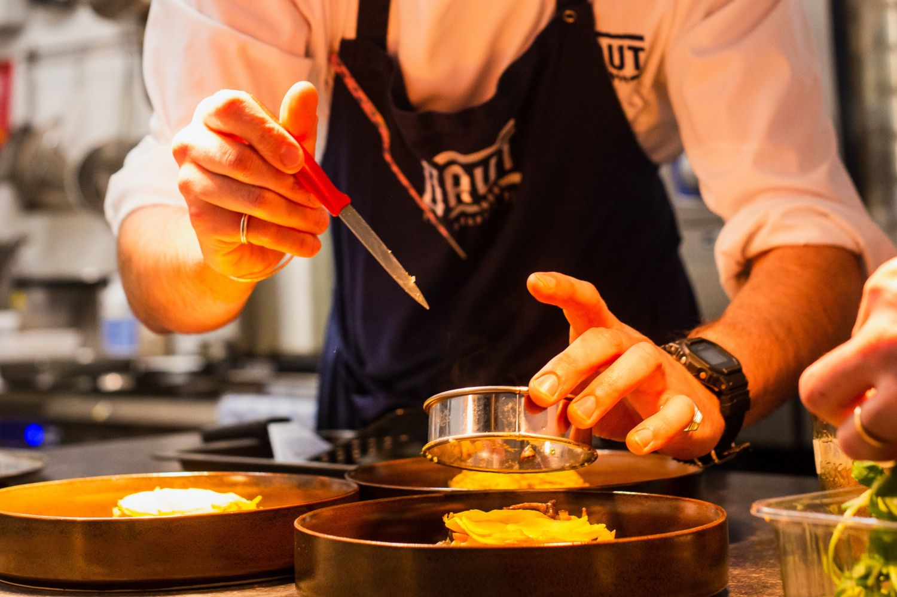

Acerca de nosotros
Somos el equipo apasionado detrás de 'Colombianos en la Cocina'. Nuestra página web es un tributo a la riqueza culinaria de Colombia. Juntamos recetas auténticas transmitidas de generación en generación, explorando los sabores y secretos detrás de los platos icónicos de nuestra nación. Nuestra misión es compartir la cultura y el amor por la comida colombiana, invitándote a unirte a nosotros en este emocionante viaje gastronómico. ¡Descubre, cocina y disfruta con nosotros!
Bandeja Paisa

La Bandeja Paisa, un plato emblemático de Colombia, es un festín de sabores y texturas. Combina carne, arroz, frijoles, huevo frito, chicharrón, aguacate y plátano maduro en una experiencia culinaria inolvidable.
Mute Santandereano

El Mute Santandereano es un plato icónico de la región de Santander en Colombia. Esta sopa espesa combina frijoles, carne de cerdo, yuca, plátano y maíz para crear una explosión de sabores y texturas únicas.